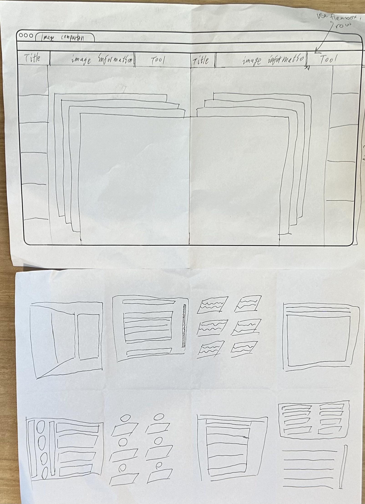

We participated in a Crazy 8s activity, where we had 8 minutes to come up with 8 quick wireframe designs. I continuously explored to find suitable navigation bar designs, and the fast-paced nature of the activity prompted me to come up with multiple interesting solutions in a short amount of time.
The benefits of Crazy 8s include stimulating creativity by generating a large number of ideas in a short time, encouraging participants to focus on quick thinking and refining ideas to improve efficiency, fostering diversity by exploring different viewpoints and methods, promoting teamwork and mutual growth through sharing and discussion, and driving innovation by providing a platform to try new concepts and methods, encouraging team members to think beyond traditional patterns and seek innovative solutions.
In summary, Crazy 8s is a powerful tool for stimulating creativity, improving efficiency, promoting teamwork, and driving innovation.
